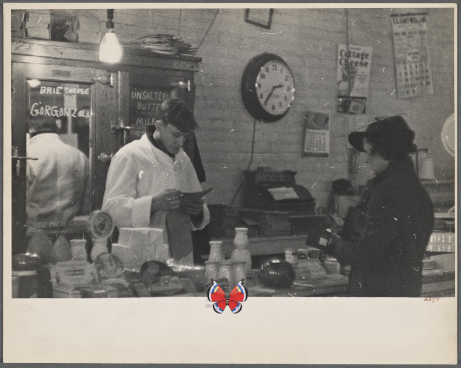
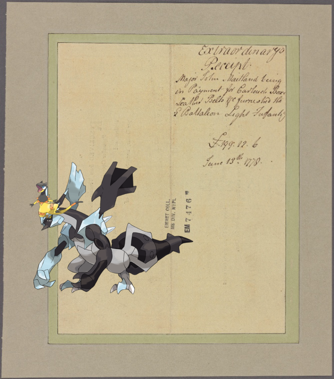

-
Diglett – Document.
-
Serperior | I haven't changed my mind since then.
-
Frogadier, Articuno + Egypt and Palestine [Title page].
-
Jellicent, Zubat + Ticknor, [William D.], ALS to. Dec. 8, 1860..
- 
-
Nidoking on Germany, Prussia, 1836-1849
-
Victini | Military costume, 1400.!
-
Pelipper, Kakuna on leaf 2!
-
Snorlax + Maj. Gen. Nathaniel Greene!
-
 Natu, Ninjask @ Ricardus I, Rex Anglorum.!
Natu, Ninjask @ Ricardus I, Rex Anglorum.! -
Entei, Sunkern @ Harlem Plains 1814
-
Tyrogue, Golbat ; Appendix.--Banks in the United States. [continued]!
-
Loudred | Salle II. Porte H 2..
-
Cryogonal on Italy. Kingdom of the Two Sicilies, 1806-1808 [part 4].!
-
![Deerling + Brooklyn V. 7, Plate No. 54 [Map bounded by Park Pl., Rochester Ave., Eastern Parkway, Utica Ave.] http://digitalcollections.nypl.org/items/ef4e4300-c5fd-012f-a144-58d385a7bc34](media/finding-TTHaDTzg.png)
-
Skrelp on The Broken Obelisk, Karnac!
-
Klink, Escavalier | Jackson, H. Portsmouth. To [General Gates]!
-
Charmander on Letter to Sir William Johnson, Niagara.
-
, Heliolisk ; Document!
-
![Metagross + DINNER [held by] ROYAL ORDER OF SCOTLAND [at]](media/finding-OJMENvbk.png)
-
Magneton @ Nawab Oomra Dulha ( Her late husband) Bhopal.!
-
Weepinbell + EM. 4171!
-
 Inkay @ Paysage d'hiver avec maisons.!
Inkay @ Paysage d'hiver avec maisons.! -

-

-
![Kakuna @ 1. Pooruck Pranaiyam [Puraka pranayama]. 2. Kumbuck [Kumbhaka]. 3. Raichuck [Recaka]. http://digitalcollections.nypl.org/items/29e6bf70-c6bb-012f-dfc6-58d385a7bc34](media/finding-ylDXlMZg.png)
-
 Zygarde, Corsola + Wirt, author of the Life of Patrick Henry.!
Zygarde, Corsola + Wirt, author of the Life of Patrick Henry.! -
 Paras | 1809 March 17!
Paras | 1809 March 17! -
![| SPEISENFOLGE [held by] NORDDEUTSCHER LLOYD BREMEN [at]](media/finding-NyBsCJut.png)
-
![Turtwig – DINNER [held by] RED STAR LINE [at] EN ROUTE ABOARD S.S.VADERLAND (SS;)! http://digitalcollections.nypl.org/items/0fc50200-c53e-012f-c19e-58d385a7bc34](media/finding-dNQHIEjd.png)
-
![Bellossom @ La vache a lait, représente le commerce de la Grande Bretagne [...]! http://digitalcollections.nypl.org/items/e4658620-c608-012f-4132-58d385a7bc34](media/finding-CRUXSTuZ.png)